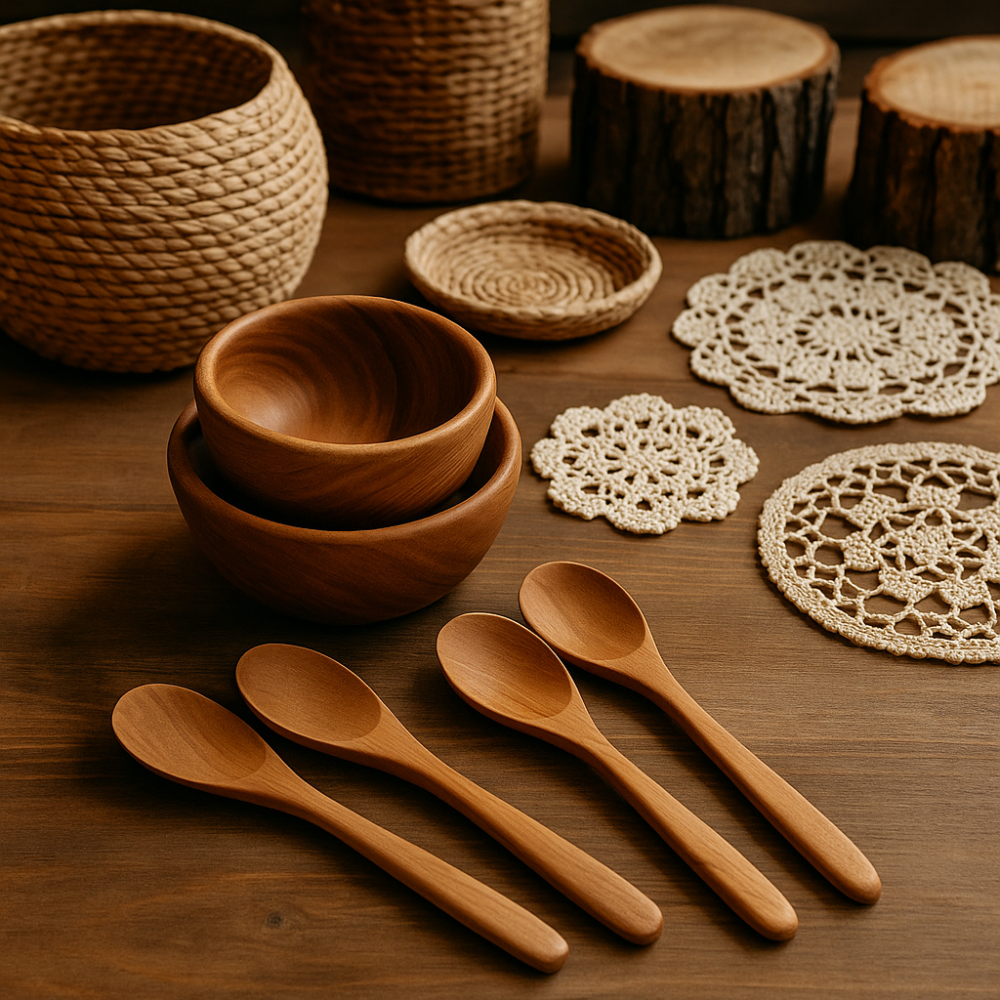

Conheça o Sítio das Pedras
No coração verdejante de Chapecó, onde o ar puro abraça a paisagem e o canto dos pássaros embala o dia, nasceu o Sítio das Pedras. Mais do que um lugar, é uma história de amor profundo pela terra, semeada e cultivada com dedicação por Dona Aurora e Seu Benedito.
Há mais de três décadas, Dona Aurora e Seu Benedito tomaram uma decisão corajosa: trocaram a agitação da cidade pela tranquilidade e os desafios da vida no campo aqui em Chapecó. As terras que encontraram, pontilhadas de pedras que davam nome ao sítio, pareciam um convite. Com a visão de uma vida mais simples e conectada à natureza, foi ali que, com paciência e trabalho árduo, começaram a plantar nosso autêntico milho crioulo, criar galinhas caipiras soltas no pasto e colher o mel dourado mais puro, sempre com o carinho e a sabedoria que herdaram de seus ancestrais.
Cada espiga do nosso milho crioulo carrega a genética e o sabor de gerações, cultivado sem pressa e com respeito ao ciclo da natureza. As galinhas caipiras vivem livres, garantindo ovos e carne de qualidade incomparável. E o mel, ah, o mel! Nossas abelhas trabalham incansavelmente, coletando o néctar das flores nativas da região de Chapecó, resultando em um mel de cor e sabor únicos.
Aos poucos, o sabor autêntico e a qualidade inquestionável dos nossos produtos foram conquistando não só vizinhos, mas também uma crescente rede de clientes fiéis. O que nasceu como um sonho familiar, plantado em cada semente e cuidado em cada detalhe, floresceu e se tornou um pequeno negócio solidamente enraizado na confiança mútua e na tradição de fazer as coisas do jeito certo, de forma artesanal.
Hoje, o Sítio das Pedras pulsa com uma nova energia. Nossos filhos estão ativamente envolvidos, trazendo novas ideias e inovações, enquanto mantemos firme a essência artesanal que nos define e o compromisso inabalável com a sustentabilidade. Cuidamos da terra para que ela continue a nos dar seus melhores frutos.
Ao escolher os produtos do Sítio das Pedras, você não está apenas adquirindo alimentos frescos e saborosos. Você está se conectando com uma história viva, feita de respeito à natureza, do esforço de uma família unida e do verdadeiro, inconfundível sabor do campo de Chapecó.